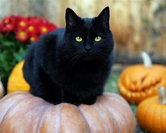

Anise
We've been in operation since 2003 with small-scale salvations. We started by adopting and facilitating fostering of black cats in local households. We've now branched out into providing start-up funding for local business showcasing fur-babies of all colors but focusing on black cats.